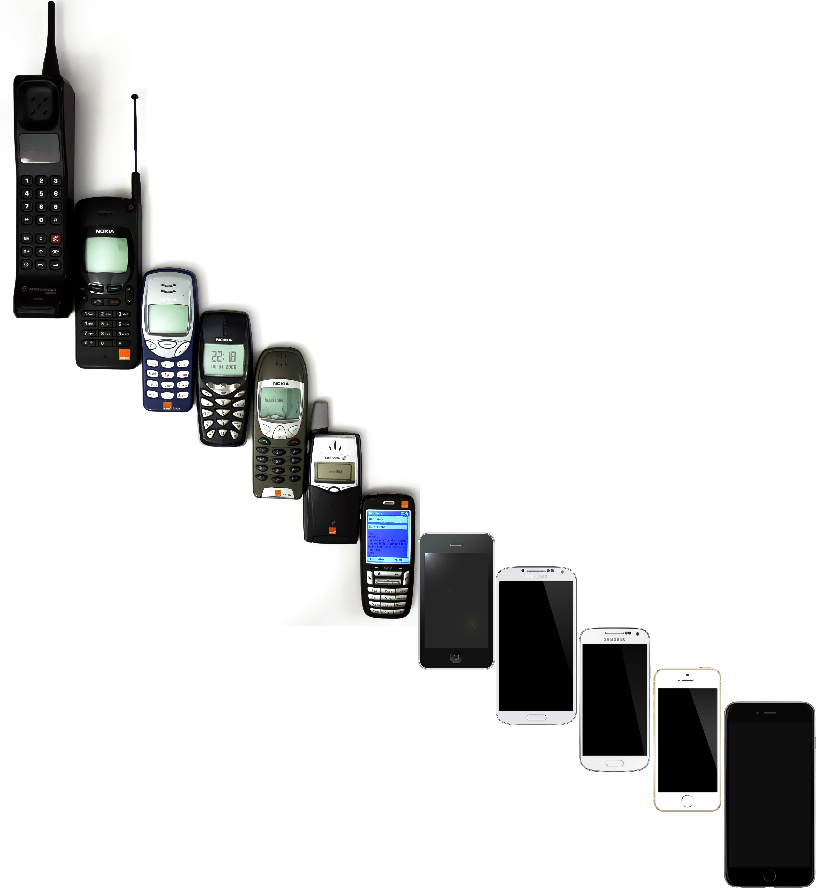

Fakultet elektrotehnike i računarstva (FER) je visokoškolska ustanova smještena u Zagrebu, koja pruža obrazovanje iz područja elektrotehnike, računarstva i informacijskih tehnologija. FER je jedan od sastavnica Sveučilišta u Zagrebu i ima dugu tradiciju u području tehničkih znanosti.


Nastava na FER-u obuhvaća različite discipline, uključujući elektroenergetiku, elektroniku, telekomunikacije, računalne znanosti, informacijske sustave, automatiku, robotiku i druge srodnih područja. Fakultet nudi preddiplomske, diplomske i poslijediplomske programe te različite specijalizacije i smjerove.


FER je poznat po visokoj razini akademske izvrsnosti, istraživačkom radu i suradnji s industrijskim partnerima. Fakultet ima niz istraživačkih laboratorija i centara koji se bave naprednim istraživanjima i inovacijama u području elektrotehnike i računarstva.


Studenti FER-a imaju priliku sudjelovati u raznim studentskim projektima, natjecanjima i praksama kako bi stekli praktično iskustvo i primijenili teorijska znanja. Također, FER potiče međunarodnu suradnju i razmjenu studenata s drugim visokoškolskim institucijama diljem svijeta.


Ukratko, Fakultet elektrotehnike i računarstva u Zagrebu igra ključnu ulogu u obrazovanju stručnjaka iz područja elektrotehnike i računarstva te doprinosi razvoju tehnoloških inovacija i napretku društva.
